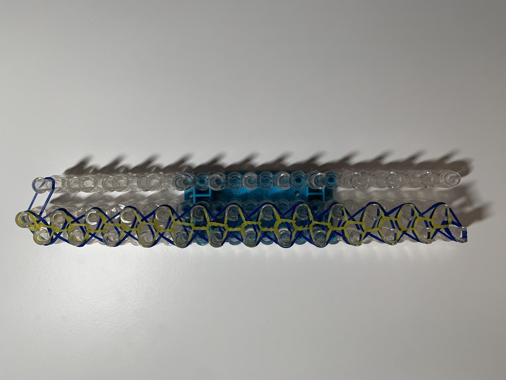
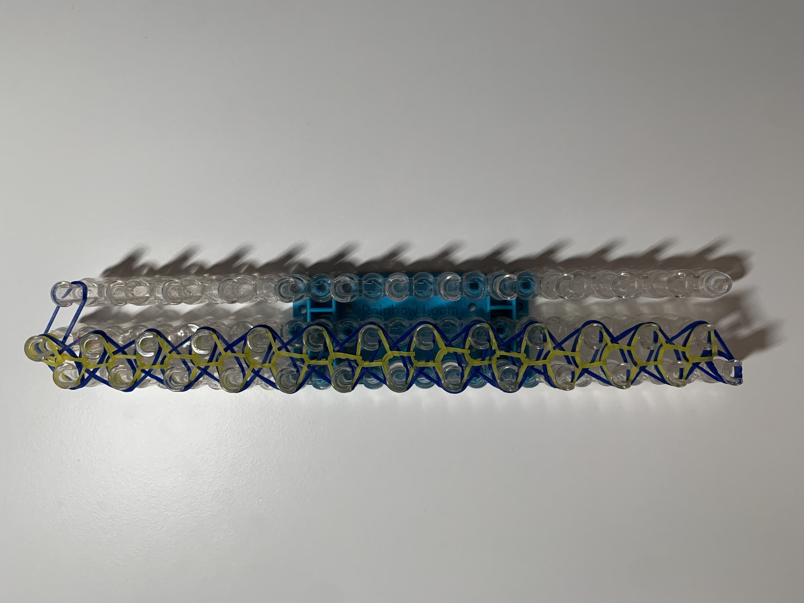

Step Six
Use your hook to go under both the cap band and the regular dark blue band on the bottom left peg. Grab the bottom yellow band and hook it diagonally to the top right peg. Then, on the next peg, hook the bottom yellow band diagonally to the top left peg. Continue this zigzag hooking pattern until you reach the end of the loom.
 
